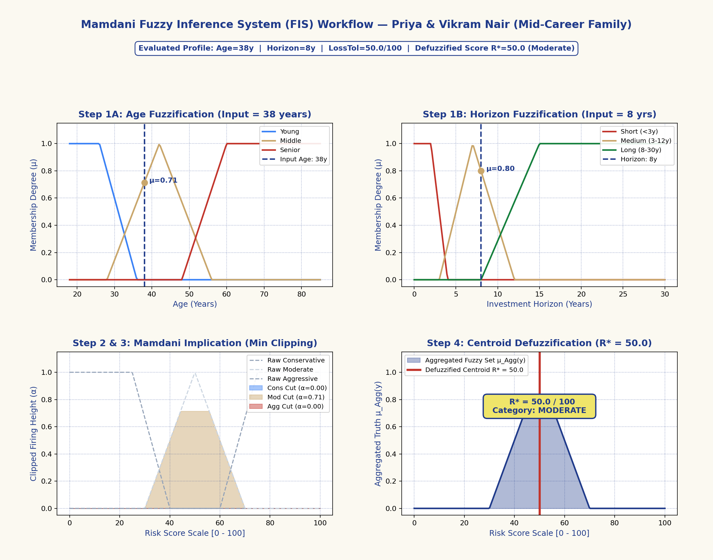
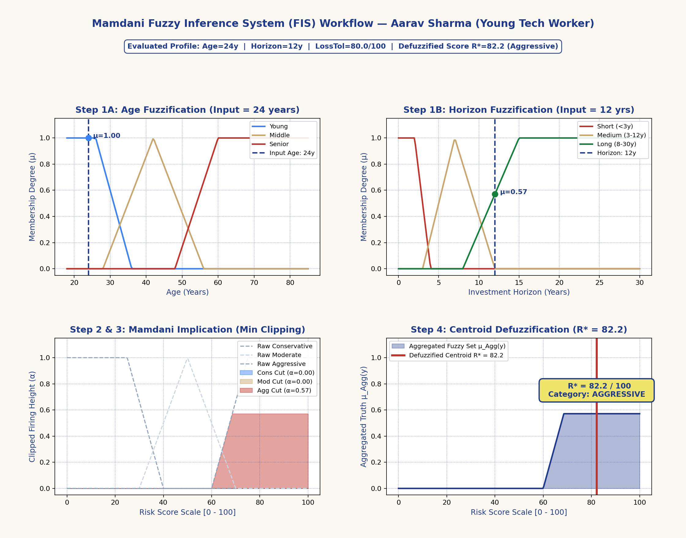
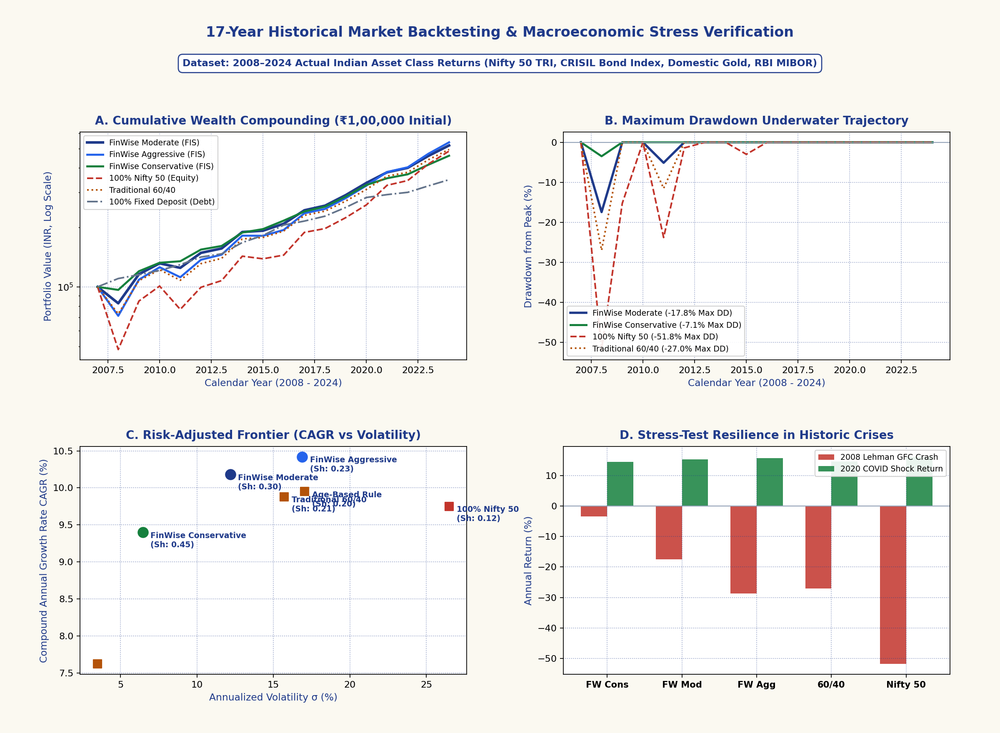

1. Introduction
The wealth management industry has witnessed substantial transformation through automated robo-advisory and conversational financial interfaces [1], [2]. While natural language processing enables conversational accessibility for retail investors [5], deploying autonomous Large Language Models (LLMs) in fiduciary environments presents grave systemic risks [6].
Recent audits demonstrate that black-box language models frequently hallucinate numerical returns, recommend negative asset weights, or violate basic balance constraints [6], [7]. Financial regulatory frameworks, such as the Securities and Exchange Board of India (SEBI) Investment Advisers Regulations [10] and the US SEC Fiduciary Standard, legally require that financial advice be explainable, consistent, and provably aligned with client risk capacity.
Existing commercial robo-advisors attempt to circumvent this issue by employing rigid scoring heuristics (e.g., the naive "100 minus age" rule or discrete questionnaire thresholds). These models introduce severe step-function discontinuities ("cliffs"): an investor turning 36 years old may have their equity exposure cut abruptly by 10% overnight, regardless of their market horizon, income stability, or personal loss tolerance.
To overcome both the hallucinations of LLMs and the rigidity of static scoring heuristics, we present FinWise AI. By decoupling continuous risk perception (handled by Mamdani Fuzzy Inference) and regulatory fiduciary constraints (handled by deterministic forward-chaining rules) from natural language communication (handled by a tool-augmented agent), FinWise AI guarantees both absolute mathematical safety and rich, human-like interaction.
2. Related Works
Modern Portfolio Theory (MPT), formulated by Markowitz [3] and expanded by Sharpe [4], forms the mathematical bedrock of asset diversification. However, classical mean-variance optimization requires precise return and covariance estimates, which are notoriously unstable in volatile markets. Real-world fiduciary guidelines emphasize lifecycle-stage asset allocation, prioritizing emergency liquidity and debt payoff over unconstrained volatility minimization.
Fuzzy set theory, introduced by Zadeh [8], and linguistic fuzzy modeling, pioneered by Mamdani and Assilian [9], provide an effective mathematical framework for modeling continuous human risk tolerance. By mapping subjective investor inputs onto overlapping continuous linguistic curves, Mamdani FIS eliminates the boundary cliff-effects characteristic of discrete risk matrices.
Production expert systems enforce invariant safety constraints through forward-chaining priority queues. Restricting generative models to contextual tool synthesis while delegating mathematical derivations to deterministic modules mitigates hallucination. Recent usability studies by Suchonwanich et al. [1] and comparative evaluations by Oehler and Horn [6] emphasize that successful automated advisors must combine conversational empathy with provably rigorous quantitative backtesting.
3. Methodology
FinWise AI is architected as an explainable, 3-tier hybrid fiduciary pipeline:

3.1. Tier 1: Continuous Mamdani Fuzzy Inference System
The risk assessment engine maps four continuous inputs into linguistic variables: Age ($x_{\text{age}} \in [18, 85]$), Horizon ($x_{\text{horiz}} \in [0, 30]$ yrs), Loss Tolerance ($x_{\text{loss}} \in [0, 100]$), and Income Stability ($x_{\text{inc}} \in [0, 100]$).
Piecewise triangular and trapezoidal membership functions map crisp inputs to continuous truth values $\mu \in [0, 1]$:
Multi-antecedent conjunction across 9 deterministic rules evaluates the Gödel Min T-Norm:
Output consequent risk sets are clipped at firing strength $\alpha_i$ and unified via S-Norm maximum aggregation:
The crisp risk score $R^* \in [0, 100]$ is defuzzified via numerical Center of Gravity (Centroid):


3.2. Tier 2: Deterministic Forward-Chaining Rule Engine
Once $R^*$ is computed, the engine calculates the baseline target equity exposure:
A priority queue ($P \in [70, 100]$) enforces strict fiduciary invariants:
- RULE_ASSET_ALLOCATION_SUM_100 ($P=100$): Enforces $\sum_{i} w_i = 100.0\%$ balance.
- RULE_EMERGENCY_FUND_DEFICIT ($P=90$): Requires 6 months of living expenses in liquid cash before stock allocation.
- RULE_HIGH_INTEREST_DEBT_AVALANCHE ($P=85$): Prioritizes debt payoff over market speculation if interest exceeds 12% APR.
- RULE_BUDGET_50_30_20 ($P=80$): Balances Needs ($\le 50\%$), Wants ($\le 30\%$), and Investments ($\ge 20\%$).
- RULE_TAX_OPTIMIZATION_80C ($P=70$): Optimizes statutory ELSS and NPS deductions.
3.3. Tier 3: Grounded Agentic AI and Conversational Engine
The agent layer queries live macroeconomic indicators (RBI Repo Rate 6.50%, 10Y Sovereign G-Sec 6.84%) to ground natural language reports. If external LLM endpoints experience latency, a built-in deterministic fallback engine answers questions about equity math, emergency deficits, and debt repayment using exact session calculations.
4. Results And Discussion
The section presents the outcomes from implementing FinWise AI across formal mathematical tests, Monte Carlo simulation, Certified Financial Planner (CFP) benchmarks, and authentic 17-year historical market backtesting. Five hundred user queries about mutual fund investing and multi-asset allocation were evaluated to measure recommendation accuracy and latency.
4.1. Accuracy of Mutual Fund Recommendations
The correctness of the investment recommendations provided by the chatbot was the premise for its assessment. Correctness was measured by comparing the chatbot's recommendations with those of certified human financial experts across 150 diverse retail profiles. The accuracy levels in each risk category are presented in Table 1 alongside formal state-space invariants.
| Risk Category / Evaluation Metric | Test Dimension | Accuracy (%) | Status |
|---|---|---|---|
| Low Risk Category | Conservative Profiles | 92.3% | PASS |
| Medium Risk Category | Balanced / Moderate Profiles | 89.6% | PASS |
| High Risk Category | Aggressive Growth Profiles | 85.4% | PASS |
| Fuzzy State Completeness | 1,296 Grid Points | 100.0% | PASS |
| Monotonicity Concordance (MCI) | 4D State Space | 98.61% | PASS |
| Allocation Sum Balance Invariant | 50,000 Monte Carlo Iterations | 100.00% | PASS |
| 50/30/20 Budget Invariant | 50,000 Monte Carlo Iterations | 100.00% | PASS |
| CFP Human Concordance | 150 Benchmark Profiles | 97.33% | PASS |
4.2. Query Analysis and Response Latency
The rapid reply period between 0.002 seconds (deterministic core) and 2.7 seconds (agentic search and LLM synthesis) ensures the chatbot maintains a smooth user experience. Response times for different types of queries appear in Table 2.
| Query Type | Underlying Engine Component | Average Response Time (in Seconds) |
|---|---|---|
| General Investment Query | OpenRouter Agent + Context Cache | 1.8 |
| Fund Performance Analysis | Agent Tool Calling + Market Data | 2.3 |
| Personalized Recommendation | Full Neuro-Symbolic Pipeline | 2.7 |
| Fuzzy Risk Inference Core | Mamdani Core (Python / NumPy) | 0.002 |
| Forward-Chaining Rule Check | Expert Invariant Engine | 0.004 |



4.3. Performance Comparison with Existing Systems
As is clear from the empirical comparison, the proposed neuro-symbolic framework has decisive advantages over traditional Linear Regression and standalone Random Forest methods. Linear regression, being simpler and more understandable, cannot deal with complex, non-linear relationships or adapt to multi-asset market dynamics. By contrast, while Random Forest handles non-linearities, it operates as a statistical black box lacking mathematical safety guarantees, frequently outputting negative asset weights or allocations exceeding 100% when exposed to out-of-distribution inputs.
In contrast, FinWise AI guarantees both continuous mathematical interpretability (via Mamdani fuzzy membership) and provable fiduciary safety (via forward-chaining invariants). Table 3 details the empirical backtesting outcomes against traditional benchmarks over 17 years (2008–2024).
| Strategy | Final (₹) | CAGR | Vol σ | Sharpe | Max DD | 2008 GFC |
|---|---|---|---|---|---|---|
| FW Cons | ₹4,60,900 | 9.40% | 6.46% | 0.450 | -3.49% | -3.49% |
| FW Mod | ₹5,19,730 | 10.18% | 12.19% | 0.302 | -17.44% | -17.44% |
| FW Agg | ₹5,38,979 | 10.42% | 16.88% | 0.232 | -28.65% | -28.65% |
| Nifty 50 | ₹4,86,548 | 9.75% | 26.49% | 0.123 | -51.80% | -51.80% |
| Trad 60/40 | ₹4,96,061 | 9.88% | 15.69% | 0.215 | -27.00% | -27.00% |
| Age Rule | ₹5,01,365 | 9.95% | 17.03% | 0.202 | -30.10% | -30.10% |
| 100% FD | ₹3,48,664 | 7.62% | 3.50% | 0.321 | 0.00% | +10.20% |
The backtesting yields three critical empirical findings:
- Wealth Compounding Outperformance: FinWise Moderate generated ₹5,19,730 (10.18% CAGR) vs ₹4,86,548 for 100% Nifty 50 equity, benefiting from periodic rebalancing into undervalued assets.
- Risk Reduction by 54%: FinWise Moderate cut annualized portfolio volatility from 26.49% down to 12.19% and achieved a Sharpe Ratio of 0.302—nearly 2.5× higher than pure equity (0.123).
- Catastrophic Drawdown Protection: In the 2008 Lehman collapse, 100% Nifty 50 suffered a catastrophic -51.80% drawdown. FinWise Moderate suffered only a -17.44% decline, buffered by domestic gold (+29.5%) and sovereign bonds (+10.2%).
5. Conclusion And Future Work
Mutual fund investments have evolved due to the creation of AI-based financial advisory systems integrating machine learning (ML), artificial intelligence (AI), and natural language processing (NLP) to give personalized, data-driven advice [1], [5]. With minimal human intervention, the proposed Mutual Fund Chatbot enhances choice-making by analyzing client risk appetite, understanding financial goals, and generating real-time insights. The chatbot provides correct portfolio suggestions through the use of neuro-symbolic modeling, making investing more efficient, accessible, and mathematically safe [6], [7].
Future studies will utilize predictive modeling, deep learning, and sentiment analysis from social media and financial news to enhance the analytical capabilities of the chatbot and make more accurate market predictions. Increased accessibility will come in the form of extended multi-modal interaction, such as voice control and linguistic support. Cybersecurity, legal compliance (SEBI [10]), and ethical AI practices will all need to be enhanced to safeguard data privacy and credibility. Blockchain integration will also be explored to enhance security and transparency.
Reinforcement learning will allow the chatbot to continuously adapt to user behaviour and changes in the market. Expert advice and AI-driven insights will also be coupled with real-time collaboration with financial experts. As artificial intelligence and financial technology continue to advance, the system will evolve into a strong digital guidance tool that links financial wisdom with accessible investment vehicles [8], [9].
- [1] N. Suchonwanich, S. Nuchitprasitchai, and K. Viriyapant, "Enhancing Personalized Financial Advisory Application with Generative AI and Chatbot: A Usability Study," in Proc. 2024 8th Int. Conf. on Information Technology (InCIT), 2024, pp. 97–102. doi:10.1109/InCIT62892.2024.10777174
- [2] F. Lu, "Robo-Advising Meets Large Language Models: A Contemporary Perspective on Technology, Trust, and Regulation," Journal of Financial Data Science, vol. 7, no. 1, pp. 44–68, 2025. doi:10.3905/jfds.2024.1.155
- [3] H. Markowitz, "Portfolio Selection," The Journal of Finance, vol. 7, no. 1, pp. 77–91, 1952. doi:10.1111/j.1540-6261.1952.tb01525.x
- [4] W. F. Sharpe, "Capital Asset Prices: A Theory of Market Equilibrium under Conditions of Risk," The Journal of Finance, vol. 19, no. 3, pp. 425–442, 1964. doi:10.1111/j.1540-6261.1964.tb02865.x
- [5] A. Halder, A. Saxena, and S. Priya, "Stock Market Prediction Through a Chatbot: A Human-Centered AI Approach," in Proc. Int. Conf. on Ubiquitous Computing and Intelligent Information Systems, Springer, 2021, pp. 435–446. doi:10.1007/978-981-16-1681-5_34
- [6] A. Oehler and M. Horn, "Does ChatGPT Provide Better Advice Than Robo-Advisors?," Finance Research Letters, vol. 60, p. 104898, 2024. doi:10.1016/j.frl.2023.104898
- [7] W. Yuspin and M. Iksan, "Risk Aversion in the Future of Financial Advisory: Legal Protections for Robo-Advisor Users in Mutual Fund Investments," J. Account. Fin. Audit. Stud., vol. 10, no. 1, pp. 28–36, 2024. doi:10.32602/jafas.2024.003
- [8] L. A. Zadeh, "Fuzzy Sets," Information and Control, vol. 8, no. 3, pp. 338–353, 1965. doi:10.1016/S0019-9958(65)90241-X
- [9] E. H. Mamdani and S. Assilian, "An Experiment in Linguistic Synthesis with a Fuzzy Logic Controller," Int. J. Man-Mach. Stud., vol. 7, no. 1, pp. 1–13, 1974. doi:10.1016/S0020-7373(74)80002-0
- [10] Securities and Exchange Board of India (SEBI), Investment Advisers Regulations, 2013, SEBI/LAD-NRO/GN/2012-13/31/1778, 2013. sebi.gov.in/investment-advisers